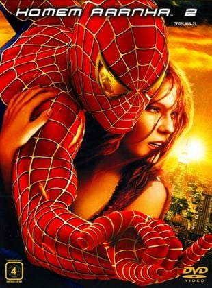
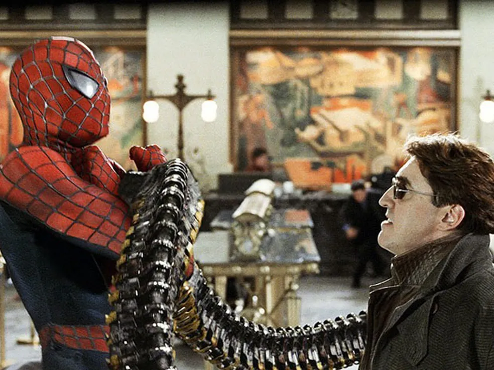

Homem Aranha 2
Após derrotar o Duende Verde, a vida de Peter Parker muda por completo. Temendo que Mary Jane sofra algum risco por ser ele o Homem-Aranha, Peter continua escondendo o amor que sente e se mantém longe dela. Ao mesmo tempo precisa lidar com Harry, seu melhor amigo, cuja raiva pelo Homem-Aranha aumenta cada vez mais por considerá-lo como sendo o assassino de seu pai. Além disso sua tia May passa por uma fase difícil após a morte de seu tio Ben, estranhando também o comportamento do sobrinho. Enquanto precisa lidar com seus problemas particulares Peter recebe ainda uma má notícia: o surgimento do Dr. Octopus, um homem que possui tentáculos presos ao corpo.
Na continuação da franquia, o que vemos é um Peter Parker (mais uma vez vivido por Tobey Maguire) envolvido com muitas coisas. Trabalho, estudos, vida amorosa decepcionante e super-herói nova-iorquino (o que dá um grau de dificuldade elevadíssimo). Como são várias as suas preocupações, seus estudos acabam ficando em segundo plano, o que chama atenção dos seus professores universitários. Suas capacidades intelectuais, porém, são inquestionáveis e ele acaba se envolvendo com a pesquisa do Dr. Otto Octavius. É daí que a trama se desenrola e o Dr. começa a ambicionar demais seu projeto, o que acaba levando-o a ultrapassar os limites da bondade. arry, agora chefe da divisão de pesquisas da Oscorp, investiu na pesquisa de Otto Octavius, um ídolo de Peter. Para manter um experimento de fusão estável, ele desenvolveu quatro braços mecânicos artificialmente inteligentes controlados por ele e fixados em seu corpo. Para impossibilitar qualquer dos braços de assumirem vontade própria, um chip inibidor foi adicionado à aparelhagem. O experimento, contudo, fracassa: a fusão desestabiliza-se, e devido ao forte campo magnético criado, objetos começam a ser fortemente atraídos e o laboratório é pouco a pouco destruído. Peter Parker, que assistia à experiência, põe sua fantasia e tenta salvar as pessoas, mas é impedido pelo próprio cientista, que ainda acha que a fusão vai se estabilizar. Como resultado disso tudo, a fusão cessa, a esposa de Otto morre, o chip inibidor é destruído, o cientista desmaia, e mais tarde se tornando insano e Harry considera-se falido. Num hospital, cirurgiões tentam remover os braços de Otto, mas estes ganham vontade própria, matam os doutores e ajudam o vilão escapar. Ele é influenciado pelos braços a continuar o experimento e se esconde em um galpão abandonado às margens do Rio Hudson. J. Jonah Jameson o nomeia Doctor Octopus ou "Doc Ock". O vilão tenta roubar um banco para obter fundos para seu experimento, mas Peter Parker e sua tia se encontravam lá. Após um combate entre os dois, no qual a própria May foi feita refém, Otto foge com algumas sacas de dinheiro.
"Famosa briga no trem"
Mary Jane e Peter se encontram em um café e Peter nega seu amor por Mary, que lhe pede um beijo. Logo antes do beijo acontecer, porém, Peter tem seu sentido aranha reativado e percebe um carro arremessado por Doc Ock prestes a cair sobre os dois. Contudo, Doc Ock sequestra Mary Jane e a leva como garantia de que Peter lhe conseguirá o Homem-Aranha. Peter percebe que ganhou todos os seus poderes de volta, recupera sua fantasia (guardada no prédio do Clarim Diário depois que foi encontrada) e sai atrás do vilão. Os dois começam uma batalha que segue em cima de um trem elevado. Durante a luta, Doc Ock acelera o trem até a sua velocidade máxima e destrói os freios, deixando para o herói a missão de parar o veículo antes que este ultrapasse uma barreira no fim dos trilhos. Após muito esforço, o Homem-Aranha para o trem, mas desmaia de cansaço. Os passageiros do trem o veem sem a máscara, mas prometem guardar segredo. Em seguida, Otto surge e captura o agora fraco super-herói para entregá-lo a Harry. Harry entrega o trítio e desmascara o Homem-Aranha, surpreendendo-se com a identidade secreta dele. Peter recupera as forças e convence Harry a dizer onde está Doc Ock. O herói chega ao galpão, onde o cientista já consegue recomeçar seu experimento, e começa outra batalha com ele. Com um choque elétrico, ele consegue derrubar o vilão, revela sua identidade para ele e o convence a parar o experimento. Otto volta à sua sanidade, assume controle dos braços e destrói seu reator, afundando-o no rio ao custo de sua vida. Peter resgata Mary Jane antes do galpão ser destruído, mas este lhe diz que eles não podem ficar juntos, pois ele sempre terá inimigos Em sua casa, Harry tem visões de seu pai em um espelho, que o pede para matar Peter Parker e assim vingar sua morte. O espelho se abre e revela uma passagem secreta para um compartimento com todos os equipamentos do Duende Verde. No final do filme, Mary Jane abandona seu noivo no altar e visita Peter em seu apartamento, dizendo que está disposta a ficar com ele apesar dos riscos. Os dois então escutam um pedido de ajuda no rádio da polícia e Peter parte atrás dos criminosos.
Pagina 1 Pagina 3